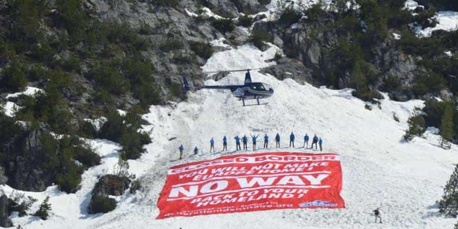
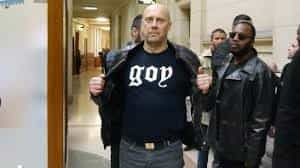

The summer has not yet started but the temperature already went up in the Soviet-like court rooms cracking down on “hate speech” throughout France. Right-wing figures keep being doxed, tried or jailed, thanks to the joint effort of zealous liberals and the eternal (((lobby that does not exist))).
The French establishment just shifted to next gear to reach full-blown 1984. Anyone flying off the handle shall be immediately unpersonned. Those were the targets in the last few weeks…
Génération Identitaire

They had a price on their head since they showed the gross incompetence of the French state (read “voluntary inaction”) to protect its own borders against illegal migrants, who are called “newly arrived” by the media now and soon to be “your friendly neighbours”.
G.I’s Facebook page was deleted after their spectacular action at Col de l’Échelle last April. So was their Twitter account after the “checked” brigade on Twitter vehemently whined until the institutions obeyed.
Some like the LICRA (a French SPLC, with the same Inuit gang at the rudder) did not fail to gloat and brag about their role in the action, while their pets at the LDNA (a violent team of rocket scientists from Wakanda) had their Twitter account verified. Romain Espino, G.I’s spokesman might lose his job after he was doxed and several liberal political personalities relayed his personal data and called for his employer to fire him.
Boris Le Lay
Another bête noire of the system, Boris had already brought the wrath of the international clique upon himself and chose exile to avoid prison. He was once more found guilty of “inciting racial hatred” a month ago and his Facebook page was blocked.
His website Démocratie Participative, a French twin of the Daily Stormer, is also in the crosshairs after it exposed many globalist figures of Eskimo persuasion and shed some light on their modus operandi and long-term goals. The Left wing parties of the country officially declared open season on Le Lay and his “intolerance”.
Alexandre Gabriac
Gabriac was tried and condemned to six years probation this week, for recreating the group Jeunesses Nationalistes (Nationalist Youth) despite its dissolution by the government five years ago, following the death of Antifa member Clément Méric, who attacked a group of right-wing youth, got hit, and died seven seconds later.
It was a death the establishment did not care about (for Méric was White) until it became a tool during the witch hunt against the French right, just like Heather Heyer’s death in Charlottesville.
Gabriac recently described how he was intimidated, followed for months and arrested by the antiterrorist section of the public prosecutor’s office.
Hervé Ryssen

The writer appeared in court two weeks ago and is likely to be sent to jail for “hate speech” after he tweeted that “the main culprits of the massacres that claimed the lives of thirty million Christians in the USSR between 1917 and 1947 were Jews”.
It did not matter that the objective historical facts are on his side and that he produced several sources to back his claim while facing the court, the verdict was probably already decided.
Alain Soral

Soral was condemned twice last week to a suspended sentence and his platform on Youtube, ERTV, has just been deleted without any explanation, only a few months after his popular Facebook page was also deleted.

How unfortunate!
Soral was already evicted of several websites but I believe the censorship was enforced after his co-host Vincent Lapierre made himself particularly unpopular and “ideologically dangerous” when he showed that foreign-driven associations like the LICRA, CRIF (Council of Jewish Institutions) and LDJ (“Jewish Defence League”) were powerful enough to influence the French president, lean on magistrates, or give direct orders to the police.
Nicolas Dupont Aignan
A former candidate during the 2017 presidential election, Nicolas was sent to court a few months ago for a tweet where he described the massive influx of migrants in Europe as a “migratory invasion”.
The LICRA (see above) filed the lawsuit and described its outcome in those terms : “It does not matter if he is right, what he says is illegal!”
Attention, Paris is broadcasting!
France’s PC junta has gone full clown world. We already knew that truth and proofs do not matter, but this political round-up is used as an example for the French population.
It coincides with a campaign lead by the State, where soon every public media will need to be approved before publishing any content. The rest will be wiped out.
As Françoise Nyssen, unfuckable cat lady and Minister of Culture puts it:
“This partisan media shall be (…) of all colours and origins. With a political agenda without ambiguities, it will change opinions on the ground. (…) The understanding ability of our citizens is not enough anymore.”
The usual accusers
Right-wingers are vilified, doxed, harassed, jailed but actual terrorist enablers like Jawad Bendaoud walk away scot-free and jihadists are being released en masse.
A lot of these right-wing figures were “fichés S” (filed “S” for “under surveillance”) by the government and the police, a title usually limited to radical Muslim clerics and potential Islamic terrorists.
Like usual, organisations like the LICRA and CRIF, heavily subsidised by the French State itself, foreign powers and well-known multicultural figures, set the tone on who shall be free and who shall not, rather than the legitimate French institution.
The system is gangrened by parasitic organisms that thrive in the chaos they create.
Un nouveau venu à suivre
What brings me a ray of hope is that the more censorship is enforced on the right, the larger the number of red-pilled men who unplug themselves from the system and seek brotherhood and support through traditional channels.
A new promising prospect is the Monte une Équipe (“Put together a team”) concept, launched by dissident Youtuber Raptor Dissident and his co-host, Papacito, where they invite young French men to find like-minded men and create a local network of “support, friendship and social cohesion”.

Raptor & Papacito, co-hosts of the “Dissident Meet-up”
In their show and videos that gather millions of viewers, they advocate a large array of principles that echo our doctrine of neomasculinity, exhorting young men to become stronger, seek income independence and so on.
Young French men want to respect themselves and stop being victims, after the system drilled their doctrine of submission in their heads for so long. Best of luck to them.
Read More: Night Of The Digital Knives: Silicon Valley Launches Biggest Internet Censorship Purge In History


{kind=link}